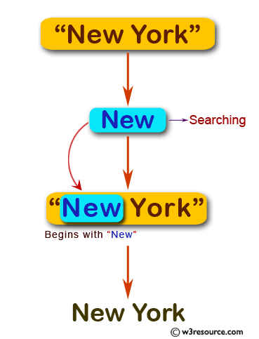

Escriba un programa JavaScript para mostrar el nombre de la ciudad si la cadena comienza con "Los" o "Nuevo"; de lo contrario, vuelva en blanco. R:66
Escriba el nombre de una ciudad:
Verifica tu ciudad
Descripción gráfica del Ejercicio.
